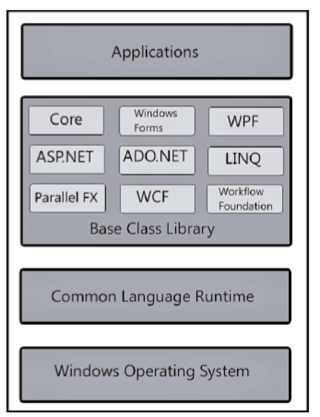

Diseño de aplicaciones II
Alejandro Tocar

aletocar@gmail.com

aletocar
Conocimientos Previos
Para el curso, asumiremos que saben lo siguiente
- .NET
- HTML5 y JavaScript
- git
- Visual Studio 2015 Enterprise
- Clean Code + TDD
Temario
- Repaso .NET
- Aplicaciones Web
- ASP.NET Web API
- Single Page Applications
- AngularJs
- Reflection
Repaso
Framework .NET
- Qué es .NET
- Arquitectura .NET
- Visual Studio 2015 Enterprise Edition
Qué es .NET
Tecnología compleja que provee la infraestructura para construir, compilar y gestionar aplicaciones
Arquitectura .NET
Visual Studio
2015 Enterprise Edition
Descarga desde MS HTML
HTML
HyperText Markup Language
Permite definir el "esqueleto" de las aplicaciones web
Para practicar
 JavaScript
JavaScript
El lenguaje de programación de la Web
Ejemplos como Node.js, permiten utilizarlo
Para practicar
Aplicaciones Web
¿Qué son?
Cualquier aplicación a la que se accede a través de una red
ASP.NET
- Framework de programación WEB dentro de .NET
- Web Forms
- MVC
- Web API
WCF
Windows Communication Foundation
Framework para permitir la comunicación entre aplicaciones
Permite Web Services, Remoting, Message Queues
Web API
Si bien WCF permite crear servicios REST, es una herramienta demasiado pesada
Web API introduce una metodología más liviana